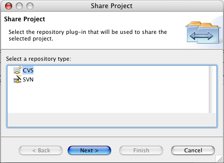
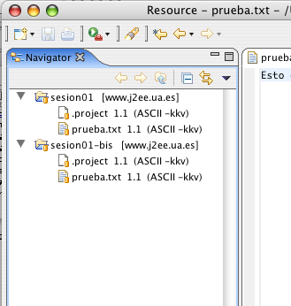

Presentamos en este documento información útil para poder seguir correctamente las prácticas del curso.
Para acceder a los ordenadores del laboratorio se debe introducir como usuario y contraseña tu NIF. En el caso de que este acceso no funcionara es posible usar temporalmente el usuario alu y con la contraseña alu.
El directorio home del usuario se borra cuando cierras la sesión, por lo que debes tener cuidado de copiar tus ficheros en el disco USB o en el repositorio CVS del curso J2EE.
Para poder leer un CD-ROM o poder leer/grabar en el lápiz USB, es necesario montar el dispositivo en Linux.
mount /mnt/cdrom/mnt/cdrom accederemos al directorio raíz del CD. Una vez hayamos terminado es necesario desmontarlo antes de extraerlo, para lo cual teclearemos:umount /mnt/cdrom
mount /mnt/usb
umount /mnt/usbEclipse es el entorno de programación que se va a usar en todas las asignaturas del curso. Eclipse guarda todos los proyectos en un directorio de trabajo que es posible seleccionar. Recomendamos que uses como directorio de trabajo un directorio del disco USB. Puedes llamarlo eclipse. Primero debes crearlo en el disco USB:
mount /mnt/usb
cd /mnt/usb
mkdir eclipse
Y después debes seleccionarlo al arrancar Eclipse, como muestra la siguiente figura:
De esta forma podrás usar el mismo directorio de trabajo y trabajar con los mismos proyectos en cualquier ordenador.
Se ha insalado en el servidor del curso de especialista un repositorio CVS para guardar los ejercicios y trabajos que se van a desarrollar a lo largo del curso. Cada alumno es propietario de un conjunto de módulos (directorios) del repositorio y allí se deberán guardar los ejercicios para que sean corregidos por los profesores del curso.
Cada alumno tiene un identificador de usuario y una contraseña única en el repositorio CVS. De esta forma sólo tú (y el profesor, para poder corregir los ejercicios) tienes acceso a tus módulos CVS.
Para cambiar tu contraseña debes conectarte con ssh al servidor www.j2ee.ua.es y ejecutar el comando passwd. Supongamos que tu usuario es asimov:
localhost$ ssh asimov@www.j2ee.ua.es
asimov@www.j2ee.ua.es's password: <contraseña antigua>
www.j2ee.ua.es$ passwd
Changing password for user asimov.
Changing password for asimov
(current) UNIX password: <contraseña antigua>
New password: <nueva contraseña>
Retype new password: <nueva contraseña>
passwd: all authentication tokens updated successfully.
La nueva contraseña debe ser una buena contraseña UNIX: ser suficientemente larga y contener caracteres y números. Si olvidaras la contraseña puedes enviar un correo al administrador del repositorio (malozano@dccia.ua.es).
El repositorio CVS del curso es accesible desde cualquier ordenador conectado a Internet. Cada alumno tiene disponible un conjunto de módulos (directorios) en los que puede mantener de forma remota los proyectos en los que está trabajando. En concreto, están disponibles 15 módulos (uno por cada asignatura del curso) más un módulo miscelánea a tu disposición.
La tecnología CVS permite realizar un control de versiones, de forma que cada vez que se sube un proyecto al repositorio sólo se guardan los cambios realizados con respecto a la versión ya existente. Es posible recuperar versiones anteriores del proyecto o incluso mantener varias ramas con versiones paralelas de un mismo proyecto. Si estás interesado en conocer más características de CVS puedes consultar los siguientes recursos:
Los datos del repositorio CVS son los siguientes:
Dirección: www.j2ee.ua.es
Camino del repositorio: /usr/local/cvs
Modo de acceso: extssh
Existen múltiples clientes para operar con CVS. Uno de los más interesantes está integrado en Eclipse. A continuación vamos a ver de forma detallada cómo operar con él.
Cada alumno tiene disponible los siguientes módulos (donde <alu> es el identificador del usuario del alumno).
<alu>/ejb
<alu>/integr
<alu>/java-hd
<alu>/jdbc
<alu>/jsp
<alu>/mensajes
<alu>/misc
<alu>/patrones
<alu>/proyecto-1
<alu>/proyecto-2
<alu>/rmi
<alu>/seguridad
<alu>/serv-aplic
<alu>/servlets
<alu>/serv-web
<alu>/xml
Supongamos que queremos subir un proyecto (sesion01) al módulo java-hd del alumno asimov. En Eclipse los proyectos se corresponden con directorios. En la vista Navigator tenemos la lista con todos los proyectos del espacio de trabajo. Supongamos que el proyecto sesion01 contiene los ficheros .project (fichero que está en todos los proyectos Eclipse y que contiene información sobre el proyecto) y prueba.txt:
Pinchamos sobre el proyecto sesion01 y pulsamos el botón derecho. Escogemos la opción Team > Share Project...
Aparecerá una ventana en la que debemos seleccionar CVS como tipo de repositorio:

Luego hay que proporcionar los datos del repositorio CVS. Estos datos se grabarán en el directorio de trabajo de Eclipse y no tendrás que introducirlos de nuevo. Es recomendable no grabar tu contraseña de usuario si estás en un ordenador público.
Después debemos indicar el módulo (directorio) en el que queremos guardar el proyecto. Será un nuevo módulo dentro del ya existente asimov/java-hd y lo llamaremos con el mismo nombre del proyecto: asimov/java-hd/sesion01. Lo hacemos así por conveniencia, ya que podríamos darle al módulo CVS un nombre distinto al del proyecto. Eclipse sube al nuevo directorio CVS el contenido del proyecto actual (sus ficheros) y no el propio directorio.
Pulsando el botón Next> aparecerá la siguiente pantalla en la que podrás revisar qué ficheros se van a guardar en el módulo recién creado. Aparecen con un signo + los ficheros que se van a añadir al módulo. Pulsando en el icono de commit (marcado en rojo) se actualizan los ficheros en el repositorio. El comando commit es un comando CVS con el que se guardan los cambios en el repositorio.
Una vez guardados los ficheros en el repositorio, el proyecto quedará enlazado al repositorio CVS. En la vista Navigator aparece el servidor CVS asociado al proyecto:
Por último podemos explorar el repositorio CVS para comprobar que están guardados nuestros ficheros. Lo hacemos seleccionando la opción del menú: Window > Open Perspective > CVS Repository Exploring. Aparecerá una nueva perspectiva (conjunto de vistas) de Eclipse en la que podemos explorar el repositorio CVS que acabamos de actualizar:
Para cambiar de nuevo a la perspectiva anterior (llamada Resource) pinchamos el icono marcado en rojo o seleccionamos la opción de menú: Window > Open Perspective > Resource.
Cuando estamos trabajando con un proyecto que reside en un repositorio CVS debemos ser cuidadosos en seguir siempre el mismo ciclo de trabajo, sobre todo si el repositorio está compartido entre varios usuarios o si accedemos a él desde distintos ordenadores.
Una vez subido por primera vez un proyecto a un repositorio, el ciclo de trabajo con el proyecto siempre será el mismo:
Otra operación que puede ser necesaria en algún momento es obtener un proyecto completo de un repositorio.
Vamos a detallar cada una de estas operaciones, empezando por esta última.
Vamos a obtener el mismo proyecto que acabamos de subir y guardarlo en otro proyecto de Eclipse. Esto nos va a servir para simular que se está accediendo a un mismo repositorio desde distintos clientes.
Primero se debe escoger la opción de menú File > New > Project... y seleccionamos como wizard Checkout Projects from CVS.
Después seleccionamos el repostorio y el módulo que queremos obtener. En nuestro caso, es el módulo asimov/java-hd/sesion01:
Pulsamos Next> y aparece la siguiente ventana en la que podemos darle nombre al proyecto en el que vamos a descargar el módulo. Lo llamamos sesion01-bis:
Ahora tendremos dos proyectos conectados al mismo módulo del repositorio. Recuerda que esta configuración no es habitual; sólo estamos haciendo una demostración para comprobar algunas de las características de CVS.

Una vez creado o descargado un repositorio en un proyecto haremos modificaciones en el proyecto local: modificaremos el contenido de algún fichero, crearemos nuevos ficheros y directorios o borraremos ficheros existentes. Eclipse marca todos aquellos recursos que se han modificado con un símbolo especial (">").
Por ejemplo, selecciona el fichero prueba.txt del proyecto sesion01-bis, modifica su texto y sálvalo. Añade también un directorio nuevo con un fichero llamado prueba2.txt. La vista Navigator de Eclipse debe mostrar lo siguiente:
Nota que se han marcado los ficheros que se van a modificar en el repositorio. Para grabar (commit) los cambios en el repositorio, pincha el proyecto sesion01-bis y selecciona con el botón derecho del ratón la opción Team > Commit.... Aparecerá una ventana preguntando si quieres añadir el nuevo recurso (notas/prueba2.txt). Debes decir que sí. Aparecerá la ventana diálogo Commit en la que podrás escribir un comentario sobre los cambios que has realizado:
Una vez que aceptas el commit Eclipse se conecta con el repositorio y actualiza los cambios. Verás que desaparece el signo ">" que marcaba las diferencias con el repositorio.
Puedes comprobar en la perspectiva CVS Repository Exploring que ya se encuentran los nuevos ficheros en el repositorio. Pinchando en cualquiera de los ficheros y pulsando el botón derecho podrás ver los comandos que puedes usar sobre un recurso del repositorio. El más común es Show in Resource History, que muestra las anotaciones de los sucesivos cambios que has ido guardando:
Puedes comprobar también en la vista CVS Repositories que el directorio notas no lleva una etiqueta con su número de versión. Esto se debe a que CVS no trata los directorios como recursos.
Por último, si se ha modificado el repositorio y queremos actualizar el proyecto local debemos hacer lo siguiente. Seleccionamos el proyecto local (en este caso, sesion-01) y pulsando el botón derecho escogemos la opción Team > Update....
En la perspectiva de Team Synchronizing podemos comprobar qué ficheros se van a actualizar:
Pulsamos en el icono de aceptar los cambios y el proyecto quedará actualizado.
Por último, para dejar el módulo limpio y poder usarlo de nuevo en la asignatura Java y Herramientas de Desarrollo, borramos todos los ficheros y directorios del proyecto sesion01 y hacemos commit. Con eso se borrarán todos los ficheros del módulo asimov/java-hd/sesion01. Sin embargo, no se borrará el módulo; en CVS no se pueden eliminar modulos (directorios) de forma remota. Se podría hacer “manualmente” entrando con ssh en el servidor y borrando el directorio:
localhost$ ssh asimov@www.j2ee.ua.es
www.j2ee.ua.es$ rmdir –rf /usr/local/cvs/asimov/java-hd/sesion01
NOTA: CVS no funciona correctamente en sistemas de ficheros FAT. Para poder crear proyectos en el disco USB tendremos que formatearlo con un sistema de ficheros NTFS o EXT2/3. Para crear un sistema de ficheros EXT2 de Linux en el disco USB haremos lo siguiente:
mkfs.ext2 -b 4096 /dev/sda1
Para hacer esto necesitaremos tener permisos de root. Podremos acceder al contenido del disco desde Windows utilizando el driver ext2fsd o la aplicación explore2fs.
Si no deseamos formatear el disco USB, una segunda opción es trabajar con los proyectos en el disco duro. Una vez hayamos finalizado, empaquetaremos los proyectos en un fichero TAR y copiaremos este fichero a nuestro disco USB.